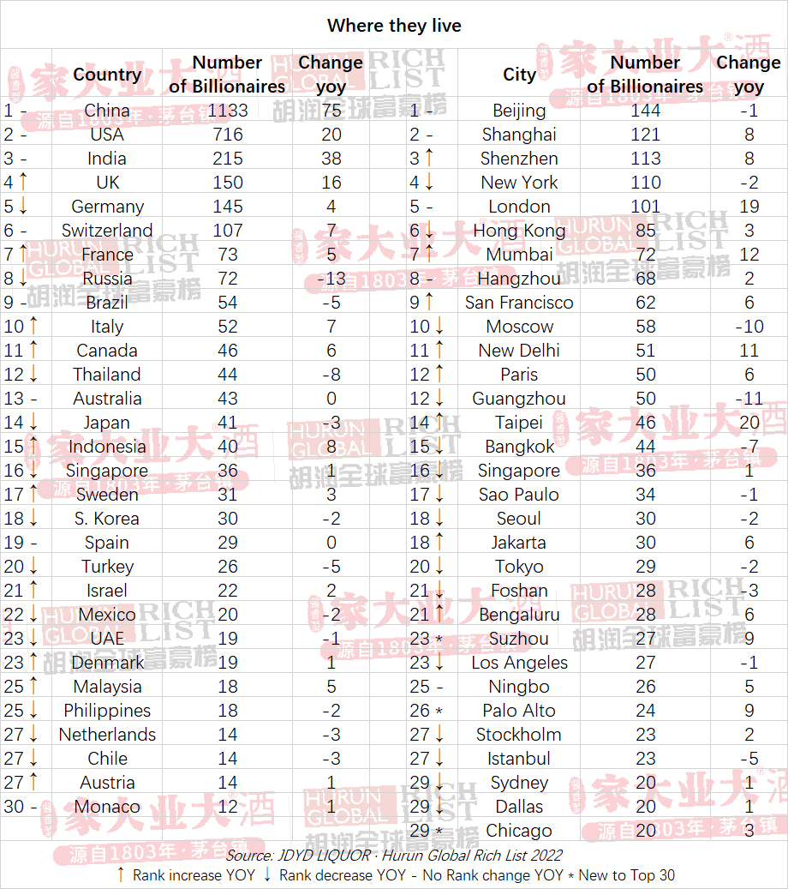
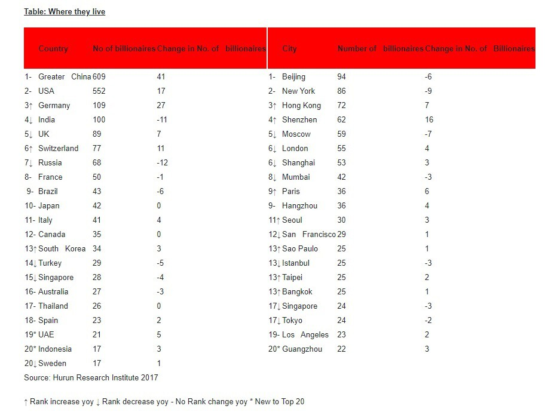
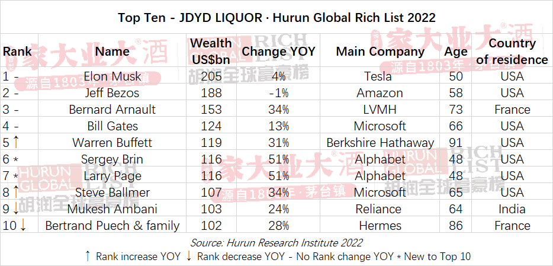

Hubo un tiempo, entre finales del siglo XIX e inicios del XX, en el que las fortunas de Nueva York quisieron dejar claro el poderío de la ciudad de la manera más rotunda y costosa posible: levantando rascacielos . Y les fue bien. En cuestión de décadas dieron forma, entre otros, al Woolworth, el Empire State o el Rockefeller Center. Hoy siguen impresionando, pero, por más que la idea probablemente hubiese escandalizado a los magnates del XX, ya no marcan la "capital" de los millonarios.
Nueva York sigue acogiendo rascacielos y magnates con una larga ristra de ceros en su cuenta corriente, pero hay otras ciudades con más multimillonarios. Y lo más curioso es que todas se sitúan lejos de allí, en China. La lista de fortunas de 2022 que acaba de publicar Hurun —una empresa con sede en Shanghái—, muestra que, tras bajar un puesto, Nueva York es la cuarta ciudad del mundo en número de grandes fortunas. Acoge 110, menos que Shenzhen, Shanghái o Pekín.
Más que un dato curioso o una simple anécdota circunstancial, la tabla de Hurun refleja con claridad cómo las grandes fortunas se concentran cada vez más en Asia, especialmente en China e India, y menos en Estados Unidos u otros países occidentales. Y para muestra un botón: de las 30 metrópolis con mayor número de multimillonarios, 18 se encuentran en Asia. Bajando un poco más al detalle, se comprueba incluso que de esa treintena casi la tercera parte se concentran en China.
El empuje del Gigante Asiático
La lista Hurun de hace apenas unos años, 2017, muestra una fotografía ligeramente distinta. El ranking de las 20 urbes con mayor número de multimillonarios lo lideraba ya Pekín, pero Nueva York figuraba mucho más arriba, en segundo lugar. París bajó desde entonces del puesto noveno al 12º y Moscú del quinta al décimo. En cualquier caso, el peso asiático en el listado ya era por entonces considerable: sumaban 12 localidades, la mitad de ellas repartidas por el Gigante Asiático.
Si a lo largo de la geografía china se reparten tantas ciudades con magnates es, simple y llanamente, porque en el país viven un buen puñado de ellos. Según la "fotografía" tomada por Hurun a nivel internacional, la República Popular acoge a 1.133 multimillonarios —75 más que el año anterior—, dato que la convierte en el estado con mayor concentración de magnates. El segundo puesto del ranking lo ocupa EEUU, con 716; el tercero India, con 215; y el cuarto Reino Unido, con 150.
"China continuó alejándose de EEUU en el último año, con 1.133 multimillonarios 'conocidos'. El punto de inflexión se produjo en 2016, cuando los multimillonarios chinos superaron por primera vez a los estadounidenses. Desde entonces, el número de multimillonarios de China se ha duplicado con creces, mientras que los de EEUU han crecido un tercio", comenta Rupert Hoogewert, presidente e investigador principal de Hurun Report. Sus datos hablan por sí mismos: China acoge el 17% de la población mundial y el 34% de los milmillonarios "conocidos", cuatro puntos más que en 2021.
Para entender bien lo que está pasando en el Gigante Asiático ayuda conocer la historia de Shenzhen, la ciudad que acaba de adelantar a Nueva York como hogar de multimillonarios. Sus orígenes no pueden ser más humildes: empezó como un pueblo de pescadores, pero la decisión del gobierno de Deng Xiaoping de convertirla en la primera zona económica especial del país en 1980 le dio un impulso considerable que disparó su economía. Como recoge la CNBC, de 1979 a 2021 su PIB se disparó de menos de 28 millones de dólares a casi 475.000. Hoy es un polo de innovación.
El fenómeno no es exclusivo de China. Los analistas de Hurun perciben cómo Asia se está "distanciando" de América del Norte y Europa. Si acoge el 57% de la población mundial, en 2022 registró el 66% de los nuevos rostros en la lista de magnates, el 52% de los multimillonarios y el 42% de la riqueza. A lo largo de la última década —señalan— el número de grande fortunas de la India se ha duplicada cada lustro hasta rondar ya los 250 cuando se hizo el último informe.
Si queremos comprender esos datos hay que tener en cuenta una clave esencial: que China o la India ganen multimillonarios no significa que se estén perdiendo en otras latitudes.
El tablero global de las grandes riquezas no es un juego de suma cero. Aumentan en China, pero también Estados Unidos, Reino Unido, Suiza, Alemania o Francia, entre otros países. Los analistas calculan que, pese a la guerra de Ucrania y el impacto del COVID, los multimillonarios han alcanzado "un nuevo récord": tras sumar unos tres nuevos ingresos a la semana, el club de las grandes fortunas del planeta se sitúa ya en 3.381. Son 153 más que hace solo un año y, asegura Hurun, un 50% más que hace solo un lustro. Hay quien "pincha", claro, como Rusia, con 13 magnates menos.
Las tablas muestran también otro dato curioso. Pese a su despliegue de ciudades con multimillonarios o de grandes fortunas, China no tiene a ningún representante en el "Top 10" de Hurun, encabezado por Elon Musk, Jeff Bezos, Bernard Arnault, Bill Gates y Warren Buffet. Es más, en la lista solo hay un asiático: Mukesh Ambani, presidente y máximo accionista de Reliance Industries. La mayor parte de los magnates de ese selecto club tienen su hogar en EEUU.